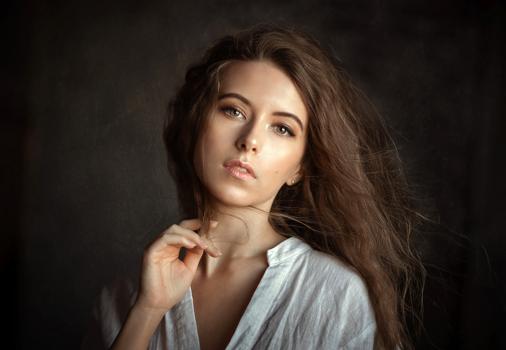
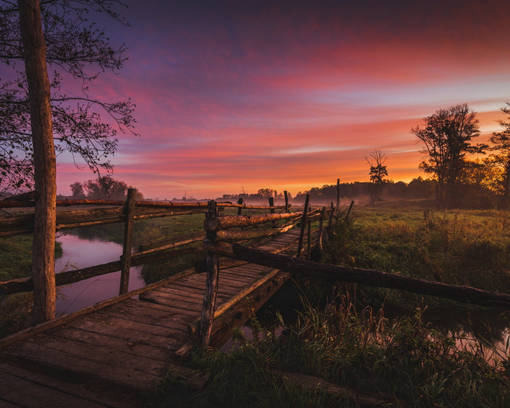
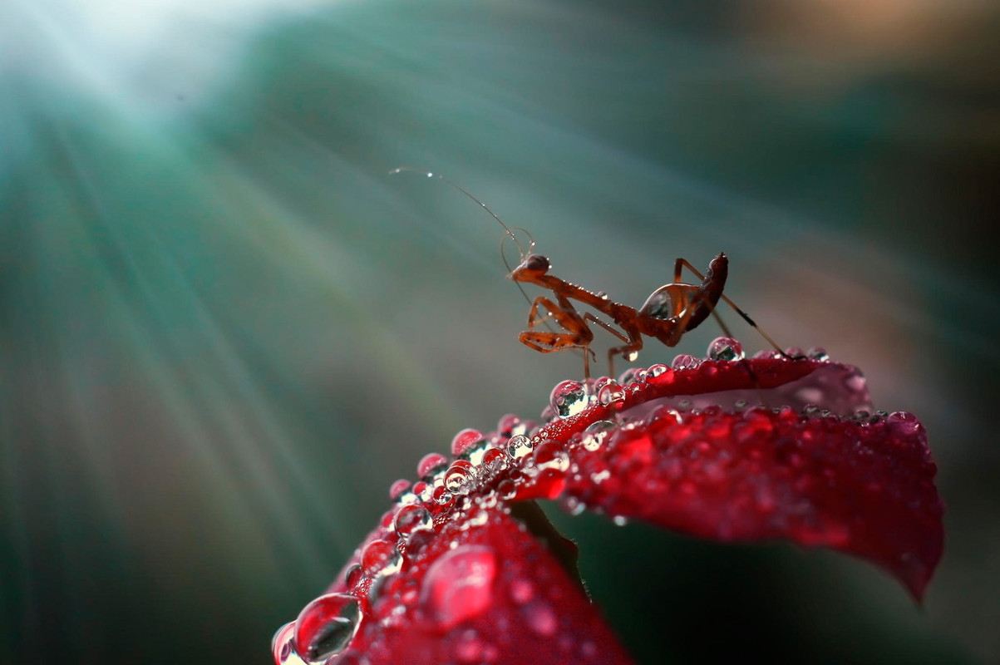
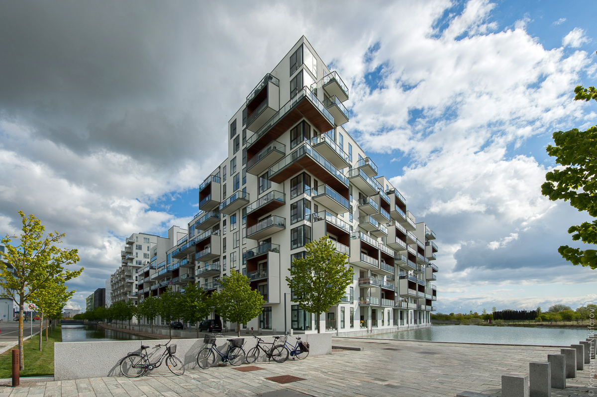
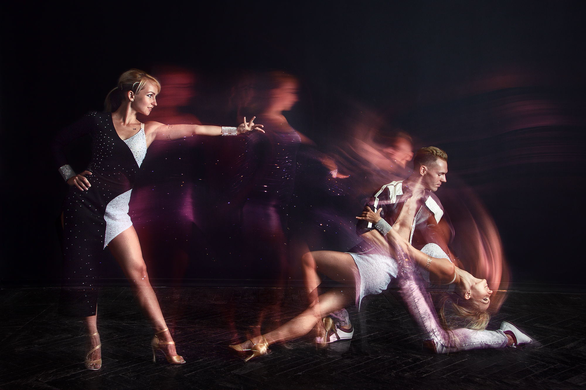

Техники съёмки
-

Портретная съемка: фокусировка на лице или верхней части тела, чтобы передать характер портретируемого.
-

Пейзажная съемка: съемка широких природных или городских пейзажей для передачи красоты окружающего мира.
-

Макросъемка: фотографирование мелких объектов, часто с использованием макрообъективов, для показа деталей, невидимых невооруженным глазом.
-

Архитектурная съемка: съемка зданий, сооружений и архитектурных деталей для передачи их формы, текстуры и дизайна.
-

Съемка на длинной выдержке: использование длительной выдержки для создания эффекта движения в снимке, такого как размытые световые следы или течение воды.
-
 Съемка на короткой выдержке: использование короткой выдержки для замораживания быстрого движения объекта.
Съемка на короткой выдержке: использование короткой выдержки для замораживания быстрого движения объекта.